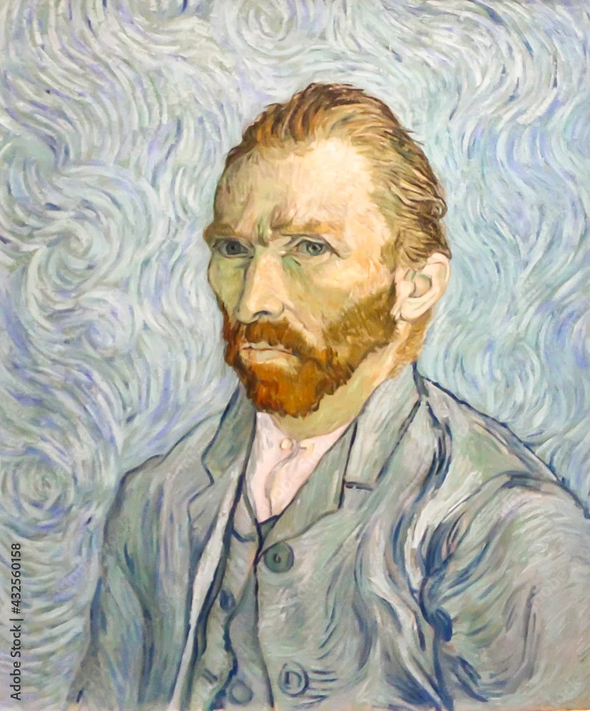
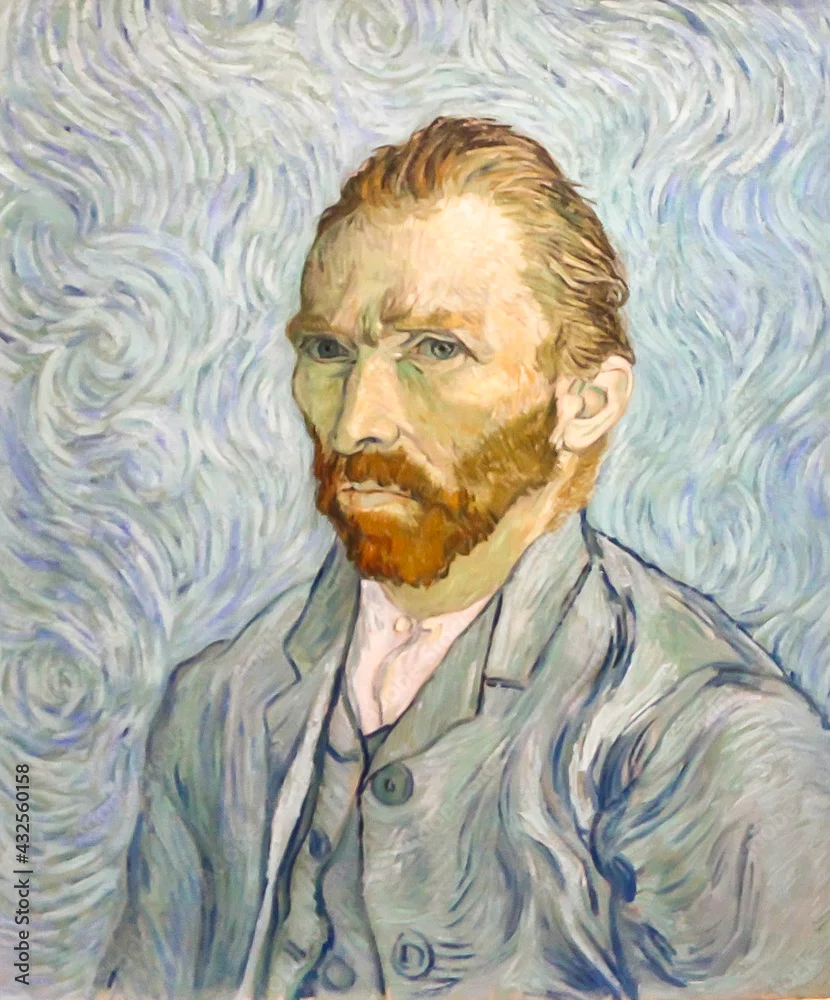

Vincent van Gogh
"Great things are done by a series of small things brought together."
Our Gallery
Van Gogh's Masterpieces
Explore Vincent van Gogh's masterpieces in the museum's permanent exhibition. See his development as an artist in the museum galleries. Get to know his ideas and ambitions and step into Van Gogh's world.
Explore AllFeatured Works
Swirling night sky over a French village, painted from memory.
Vibrant yellow blooms capturing the essence of summer light.
Intense blue background with characteristic brushwork style.
Simple furnishings rendered in bold, expressive colors.
Purple flowers painted during his stay at Saint-Rémy asylum.
Van Gogh's Journey
Saint-Rémy Asylum
After his mental breakdown, Van Gogh voluntarily entered the Saint-Rémy asylum. Despite his struggles, this period produced masterpieces like The Starry Night and Irises, showcasing his unique ability to transform personal turmoil into artistic brilliance.
Roots in the Netherlands
Van Gogh began his artistic career in the Netherlands, focusing on rural themes and earthy tones. His first major work, The Potato Eaters, captured the harsh, honest life of peasants and marked his early interest in social realism and the dignity of common people.
The Paris Years
In Paris, Van Gogh encountered Impressionism and Japanese prints, which revolutionized his use of color and light. He painted vibrant portraits like Portrait of Père Tanguy, reflecting this dramatic artistic shift from dark, somber tones to the brilliant palette that would define his later work.
A Brief Peace in Auvers
In his final months, Van Gogh lived in Auvers-sur-Oise under the care of Dr. Gachet. He painted Almond Blossoms as a gift for his newborn nephew — a symbol of hope and new beginnings — and soon after created Wheatfield with Crows, a turbulent and emotional landscape that reflected both his inner turmoil and his profound connection to nature.
Words of Wisdom
Gallery TV

 



The Starry Night
1889
Van Gogh's swirling night sky over the village of Saint-Rémy, painted from memory and imagination during his stay at the asylum.